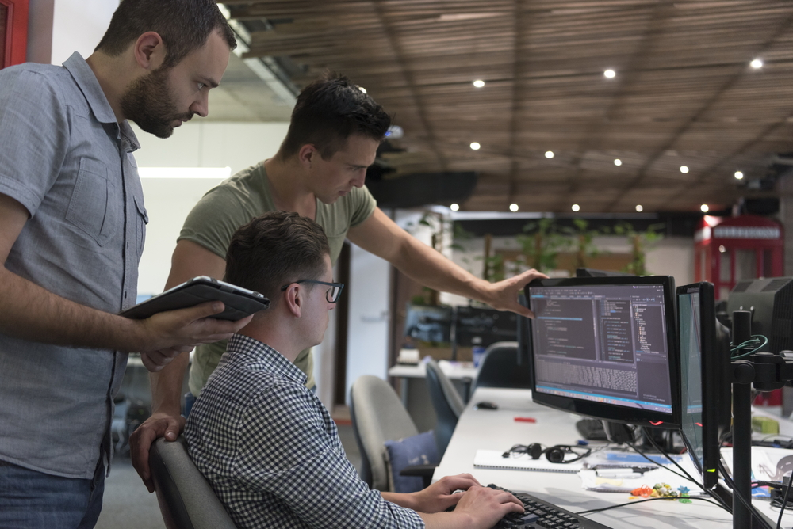

Poskytujeme kompletní spektrum ICT služeb zaměřených na outsourcing a správu informačních technologií, systémovou integraci a vývoj softwaru, provozní infrastrukturu a komunikační sítě a komplexní bezpečnost informačních i fyzických prostorů.
Od roku 1990 zajišťujeme technologické řešení, která pomáhají našim zákazníkům optimalizovat jejich procesy, zvyšovat efektivitu a chránit jejich cenná data.

V součinnosti s IT oddělením zákazníka, nebo samostatný outsourcing (plný personální) včetně převzetí předem definované zodpovědnosti v oblasti komplexní pravidelné správy pracovních stanic, serverů, provozování podpory LAN, správy dokumentů, podpory a Helpdesku pro koncové uživatele i zákazníky, vývoje a správy aplikací, řízení, nákupu, inventarizace, strategie a plánovaní IT.
Poskytování komplexních zdrojů provozní infrastruktury (servery, storage, zálohování) i bezpečnostních systémů formou služby, případně vč. komplexního zajištění správy informačních technologií s převzetím celkové zodpovědnosti. Obsahuje dodání všech součástí IS jako je např. hardware, software, podpůrné služby, odpovědnost za funkčnost systémů, školení uživatelů, bezpečnost informací, plnění právních norem, a další.
Kontaktujte násAnalýzy, studie a konzultační služby v oblasti efektivního propojení specializovaných IT systémů v jeden funkční celek, a především správného začlenění systémů do fungování organizace. Pro vybudování systémové integrační struktury často není nutné provádět velké změny v IT infrastruktuře, protože technologie zajišťující provoz integračních procesů fungují samostatně a napojují se na již fungující systémy a aplikace, a to vše, bez negativních dopadů na jejich každodenní provoz.
Analýzy, studie a konzultační služby v oblasti vývoje, správy i provozu webových prezentací a aplikací. Vývoj a provoz webových aplikací v rámci vlastního server/webhostingu v jednom z nejmodernějších datových center v Praze. Úprava a migrace aplikací pro provoz v Kubernetes (K8s), migrace do prostředí cloudu (Azure). V oblasti AI se věnujeme AI agentům, kteří představují další krok ve vývoji podnikové automatizace a pracují s definovaným cílem, samostatně doporučují řešení, a dovádějí proces ke konkrétnímu výsledku. Výsledek je optimalizace plánování, zvyšování efektivity a snižování nákladů.
Kontaktujte násNávrh, dodávky a implementace infrastrukturního HW, SW (servery, storage, zálohování, virtualizace, aplikace), vč. jejich následné správy. Součástí služeb jsou migrační scénáře při obměnách infrastrukturního HW/SW, včetně možností financování, či poskytnutí zdrojů jako služby. V jednotlivých oblastech se specializujeme na produkty globálních vendorů: DELL, HPE, VMware, Hyper-V, Proxmox, Veeam, OpenText (Dataprotector), Microsoft a v oblasti open source na edice Ubuntu server, Debian.
Návrh, dodávky a instalace komunikačních sítí (LAN, WLAN, …) a síťových prvků, vč. jejich následné správy. Součástí služeb jsou migrační scénáře při obměnách infrastrukturního HW/SW, včetně možností financování, či poskytnutí zdrojů jako služby. V jednotlivých oblastech se specializujeme na produkty globálních vendorů: aktivní prvky Fortinet, HPE, DELL, Garland, pasivní prvky Panduit, Belden, Telegartner. V oblasti týmové komunikace Maxhub, Crestron.
Kontaktujte násKonzultace a analýzy bezpečnostního stavu organizace prostřednictvím pokročilých testovacích metod (např. penetrační testování, hodnocení odolnosti proti sociálnímu inženýrství) a revize bezpečnostní architektury. Návrhy a doporučení široké škály opatření, tvorba bezpečnostních strategií, dle specifických potřeb organizace. Implementací bezpečnostních technologií pro ochranu před kybernetickými hrozbami. V jednotlivých oblastech se specializujeme na produkty globálních vendorů: Fidelis Security, Fortinet, Bitdefender, Microsoft, DELL, HPE, Veeam.
Analýza stavu objektové bezpečnosti (systémy identifikace osob – EKV, kamerové systémy – BKS, vč. systémů elektronického zabezpečení – PZTS (EZS) a požární ochrany – EPS), hodnocení odolnosti a revize bezpečnostních parametrů a zdrojů. Návrhy optimalizace, vč. dodávek a implementace systémů objektové bezpečnosti s možností jejich integrace do centrálního funkčního celku (okamžité sdílení a automatizované vyhodnocování bezpečnostních událostí, vč. využití technologií AI). V jednotlivých oblastech se specializujeme na produkty globálních vendorů: Siemens, Honeywell, HID Global, Esser, Zettler, Milestone, Axis, Salto Systems, Assa Abloy.
Kontaktujte nás